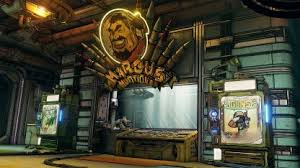

Welcome to the Gun Show
Welcome Marcus Munitions Vault Hunter. We offer some of the finest skull poppers money can buy and trust me your gonna need em. From brands like Dahl,Vladoff,Hyperion and Jakobs just to name a few you can reek havoc on all those many hazards in the many planets in the Borderlands. Shredding spiderants theres a gun for that,incinerating skags theres a gun for that, sending midgets to the moon.....yep, theres a gun for that. So come on in Vaultys and suit up....if the money is right that is.
Marcus Munitions is a state of the art(The only)weapons depot in the universe. We have Vendimg Machines that dispense Premium grade weapons at the touch of button, Talk to our friendly droids for weapon upgrades, or take your newly purchased problem solver to the range and let off a few rounds. At Marcus Munition we AIM to please.